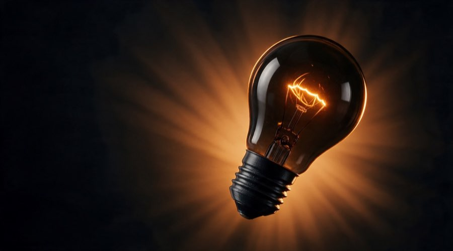

3D-Druck aus Berlin
Leg deine Idee auf die Bank.
3D-Druck auf Anfrage. Du schickst Skizze, Maße oder STL, wir prüfen Druckbarkeit und Aufwand und drucken dein Teil – vom Einzelstück bis zur Serie.
Projekt einreichen →
Fertige Kniffe ansehen
● Neu im Header: das Icon aus dem Icon-System-Board, neben der Wortmarke